Situs Sejarah Terdalam dan Religi Kuno
Jejak Kerajaan Sanrobone dapat dilihat secara kasat mata melalui berbagai artefak dan arsitektur peninggalan. Di kawasan ini, terdapat Makam Kerajaan yang unik karena bentuknya menyerupai piramida. Di area makam ini pula wisatawan dapat menjumpai Sumur Adat yang airnya dikenal tidak pernah kering dan sangat dikeramatkan sebagai simbol keberkahan, terutama untuk upacara adat seperti prosesi mandi pernikahan. Tersimpan pula sebuah bedug bersejarah dan sangat tua yang kayunya terbuat dari batang pohon cabai.
Dari segi religi, terdapat Masjid Tua Baitul Maqdis. Masjid bersejarah ini merupakan bukti nyata penyebaran dan awal masuknya agama Islam di Sanrobone, yang dibawa oleh pedagang atau ulama besar dari Jazirah Arab (seperti halnya figur dari Tuban atau Pagaruyung). Kehadiran ajaran Islam ini perlahan menggeser pengaruh ajaran Hindu-Buddha kuno yang lebih dahulu ada. Jika mengunjungi Balla Lompoa, pengunjung juga dapat melihat langsung peninggalan kerajaan seperti Tasbih Raksasa, ruang pembakaran roti tradisional kerajaan, hingga dua buah meriam kuno peninggalan masa keemasan kerajaan.
Peninggalan Sejarah Kerajaan Sanrobone
Bekas Kerajaan Sanrobone mewariskan puluhan situs bersejarah — mulai dari benteng, makam raja-raja, masjid tua, sumur dan batu keramat, hingga kesenian tradisional — yang masih dijaga masyarakat hingga kini.
Benteng Sanrobone
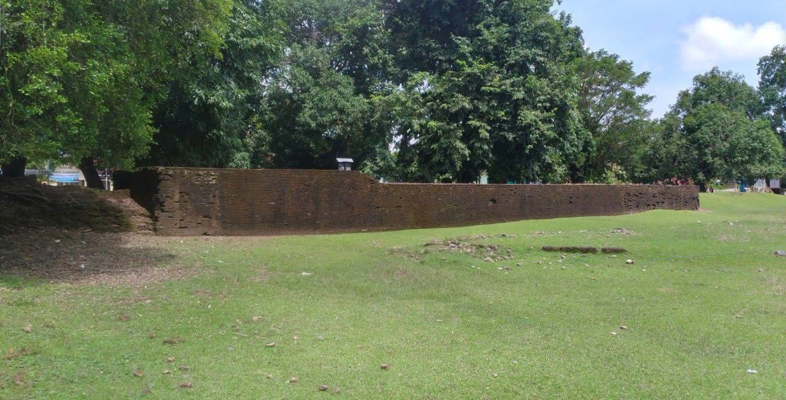
Benteng Sanrobone mulai dibangun tahun 1515 atas perintah Raja Gowa Tumapa'risi Kallonna dan rampung tahun 1520. Dahulu seluas 25,54 Ha, berbentuk perahu sepanjang ±3,7 km dengan tujuh pintu (empat pintu besar searah mata angin dan tiga pintu kecil), serta dihiasi dua meriam panjang seberat 150 kg. Benteng ini diratakan VOC pimpinan Cornelis Speelman pada Perang Makassar (1666–1669), dan istana kerajaannya dibakar pemberontak DI/TII pada 1956 setelah raja ke-23 (sekaligus terakhir), Mallombasi Daeng Kilo, memihak Republik Indonesia.
Makam Raja-Raja & Makam Para Ahli
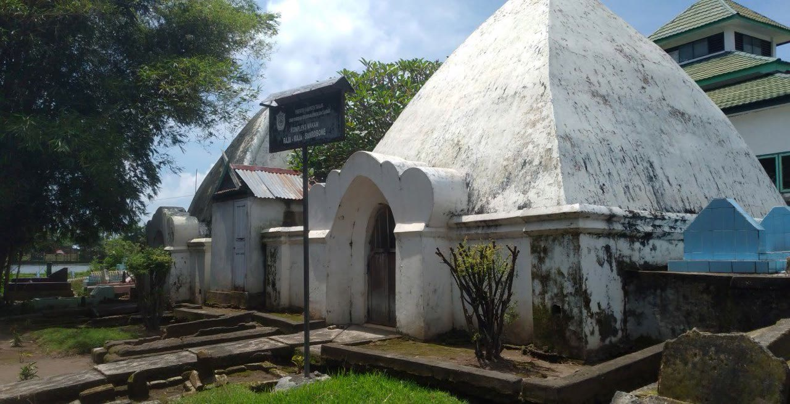
Kompleks pemakaman tua raja seluas ±60 × 44 m menyimpan sedikitnya 44 nisan berlumut. Yang paling menonjol adalah dua nisan berkubah runcing setinggi ±5 meter — tempat peristirahatan raja ke-14, Karaengta Kalukuang, dan Karaeng Timinanga Ri Masigeria (Tuminanga Ri Agurana), ulama penyebar Islam di Sanrobone. Di dekat Masjid Tua juga terdapat Kuburu Panrita (makam para ahli agama), kompleks dengan tiga kubah.
Masjid Tua Baitul Maqdis
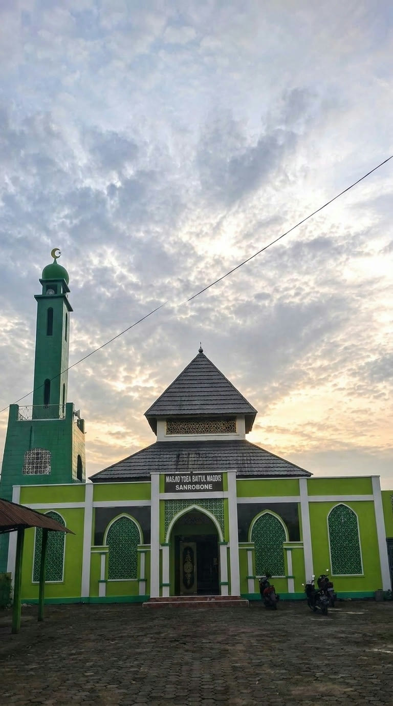
Berdasarkan catatan sejarah dan dokumen resmi Kementerian Pariwisata, masjid bersejarah ini diselesaikan dan resmi dibangun pada tahun 1603 Masehi (awal abad ke-17) di bawah kekuasaan Raja Sanrobone VI, Karaeng Tumenangga ri Campagana (Usman Abdul Quddus). Masjid ini dahulu bernama Masjid “Manurung” karena asal-usulnya tidak diketahui, dan di dalamnya terdapat sebuah bedug yang terbuat dari batang pohon cabai.
Masjid Tua dari masa ke masa:
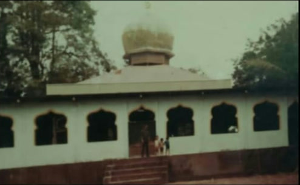
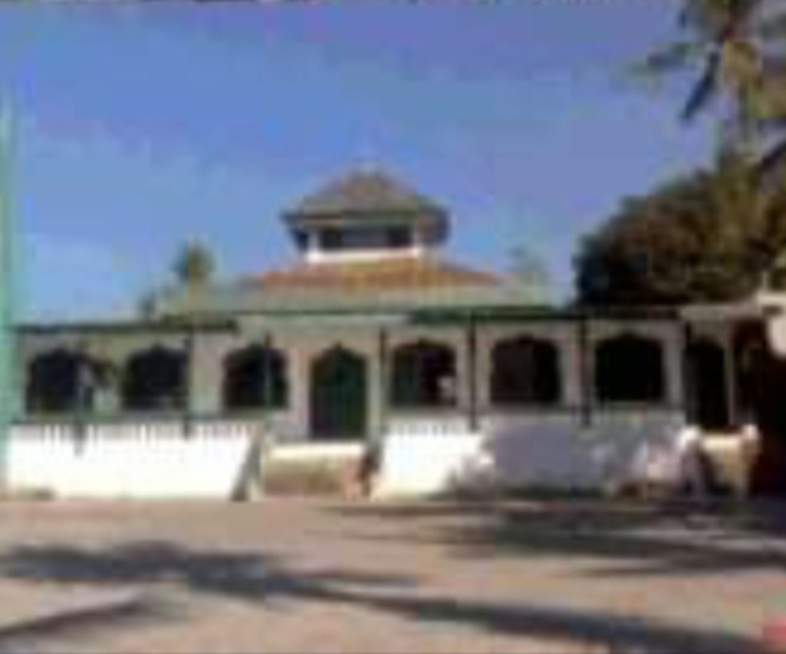
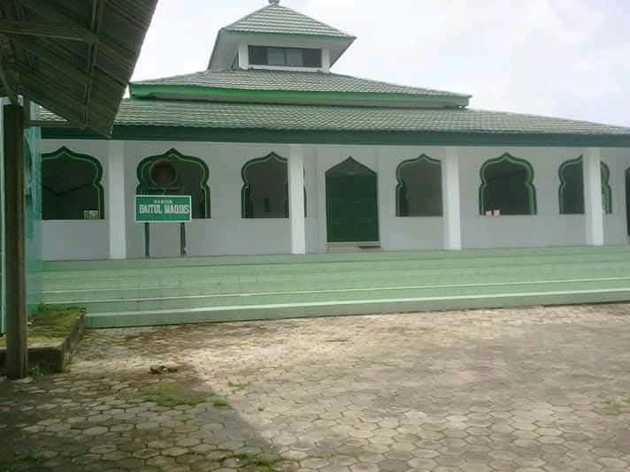
Sumur Tua
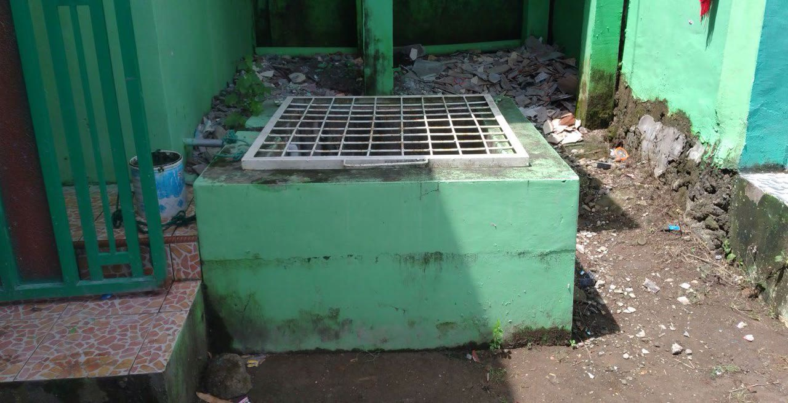
Sumur keramat di dalam kompleks Masjid Tua, sejak dahulu digunakan keturunan kerajaan untuk prosesi adat seperti pernikahan dan pembersihan benda pusaka. Airnya dipakai calon pengantin untuk bersuci dan mandi (Appassili), yang pengambilannya dilakukan secara ritual adat dengan penabuhan gendang (Patunrung Ganrang).
Batu Palantikang
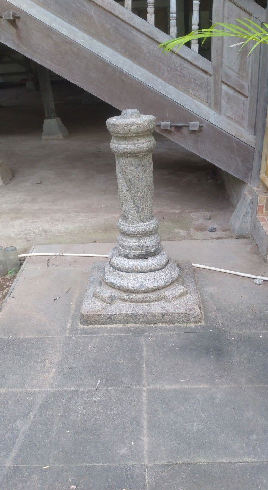
Batu simbolis yang bertempat di rumah raja (Balla Karaeng), digunakan dalam prosesi pelantikan calon raja yang menggantikan raja sebelumnya.
Balla Lompoa
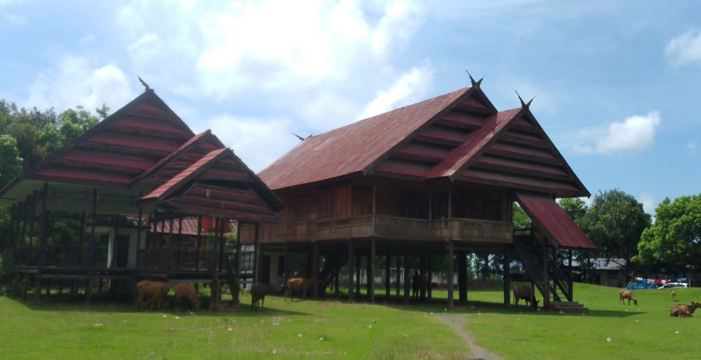
Rumah kediaman Raja (Karaeng) — rumah panggung dengan tangga tunggal di tengah bagian depan menuju teras (Paladang), tempat raja menyampaikan titah kepada rakyat. Di ujung atap terdapat sepasang tanduk kerbau dengan parang (Kalewang) yang menggambarkan lafaz “Allah”. Bagian dalamnya menjadi sarana latihan tari dan pencak silat (A'manca') keluarga kerajaan, sekaligus pusat pemerintahan dan tempat menerima tamu penting.
Tempat Pembakaran Roti Belanda
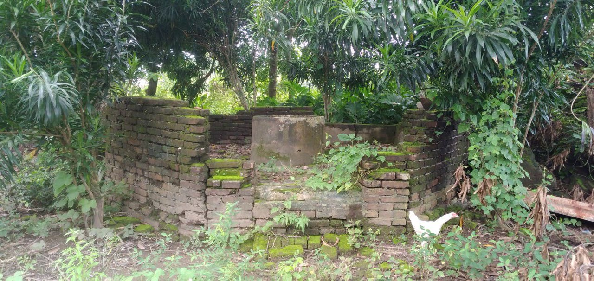
Tempat para pasukan Belanda meramu berbagai makanan dengan media utama berupa oven besar pembakaran roti, dilengkapi sebuah sumur. Lokasinya berada di luar benteng kerajaan.
Makam Panca Belong
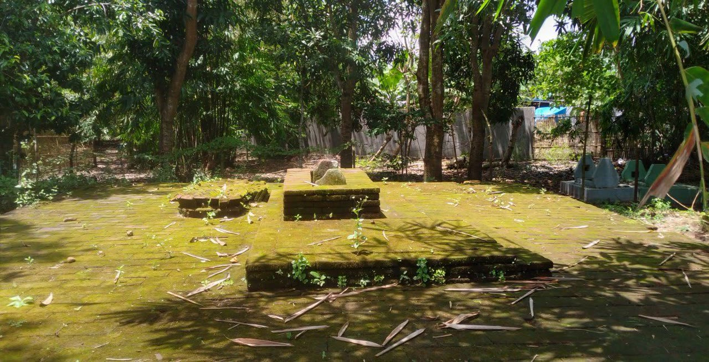
Makam raja pertama Kerajaan Sanrobone, berada sekitar 45 m di sebelah selatan Masjid Tua dan terpisah dari makam raja-raja lainnya, dengan luas ±8 × 10 m.
Kompleks Makam Ga'dong
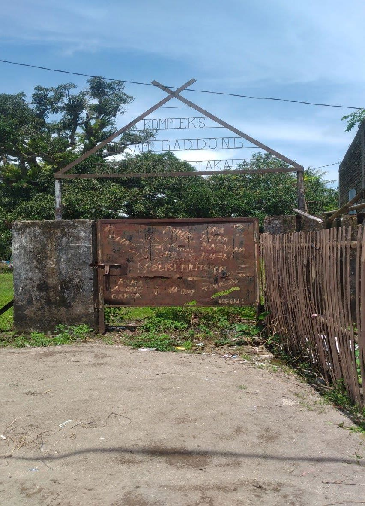
Kompleks makam unik yang memiliki makam keturunan suku Jawa, berlokasi sekitar 20 m di sebelah selatan Masjid Tua. Tokoh tersebut dahulu dikenal sebagai Karaenna Jawayya (Rajanya Orang Suku Jawa) dan La'bu Kope'.
Makam Datuk Mahkota Pagaruyung
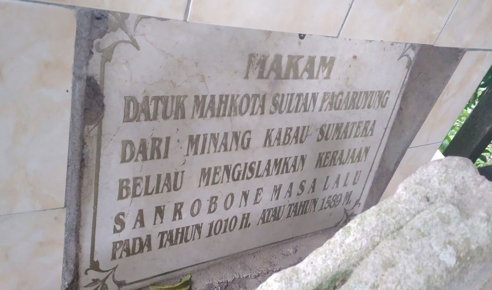
Berada sekitar 500 m di sebelah timur benteng, tepatnya di Dusun Bontowa. Beliau seorang Sultan Minangkabau, Sumatera, yang memiliki hubungan darah dengan Tuanku Imam Bonjol. Setelah hijrah akibat kekalahan Perang Malaka, beliaulah yang mengislamkan Kerajaan Sanrobone pada tahun 1589 (1010 H); keturunannya masih ada hingga kini di Desa Sanrobone.
Makam Tumenanga Riparalakkenna
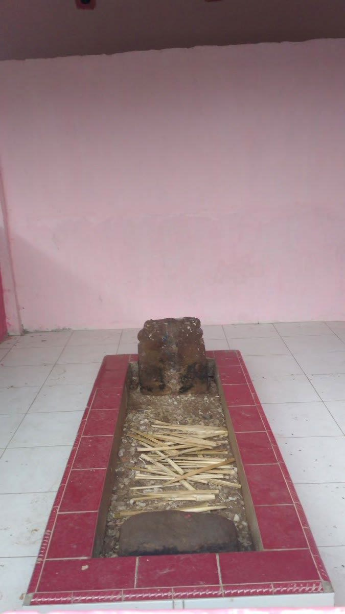
Makam raja Sanrobone ke-4, terpisah dari kompleks makam raja-raja, berlokasi di Dusun Salekowa tidak jauh dari makam raja pertama.
Pohon 4 Genus
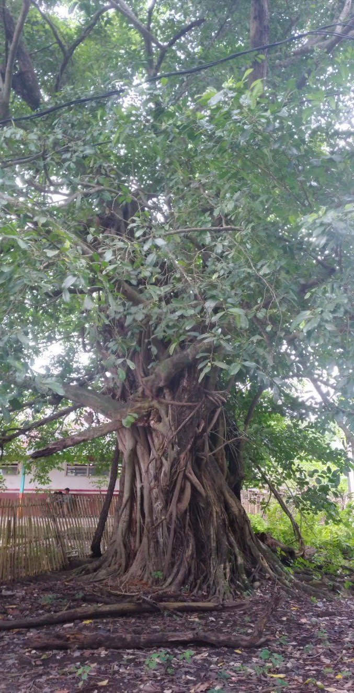
Sebuah pohon yang terbentuk secara alami dari empat jenis pohon berbeda yang menyatu, di Dusun Salekowa dekat makam raja ke-4. Konon pohon ini dahulu menjadi tempat bertengger yang menurut kesaksian masyarakat seperti seekor burung raksasa, yang dinamai burung Guruda.
Pusar Bumi (Pocci Butta)
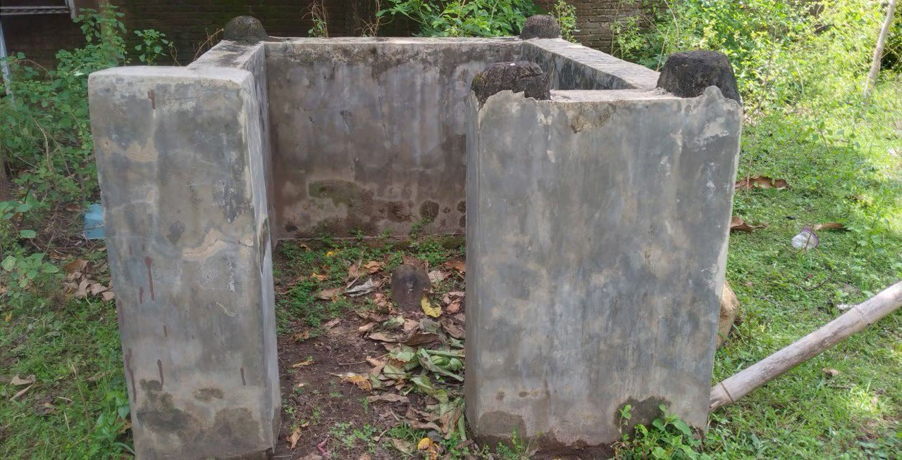
Batu berdiameter ±20 cm yang berada tepat di tengah kerajaan — sekitar 50 m di selatan masjid dan sumur tua, 100 m di selatan rumah raja pertama, dan 150 m di selatan dermaga kerajaan (Bantilang). Konon menjadi pusat ekonomi, perniagaan, dan pengajaran agama.
Laso Butta
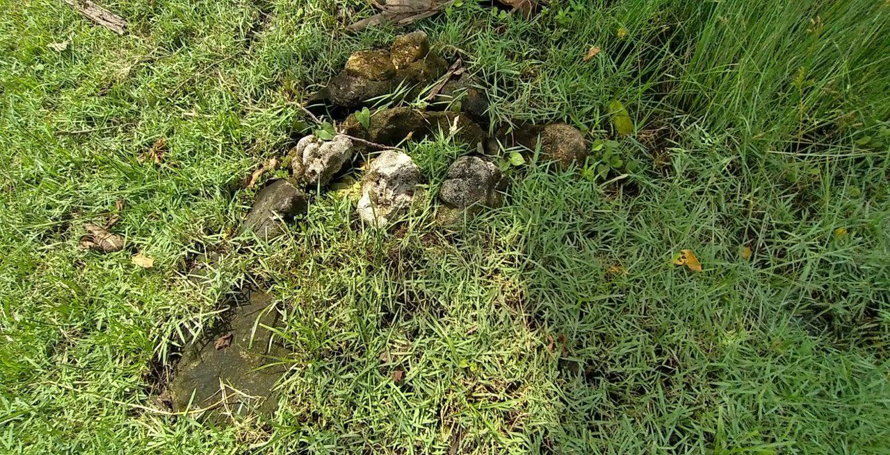
Batu karang yang terbentuk secara alami, berlokasi di antara persawahan dan empang di luar kawasan benteng. Masyarakat meyakini bila batu ini berdiri tegak menjadi pertanda akan terjadi bencana seperti banjir — dan uniknya, batu ini tidak pernah tergenang air saat banjir.
Mimbar Ikrar (Aru)
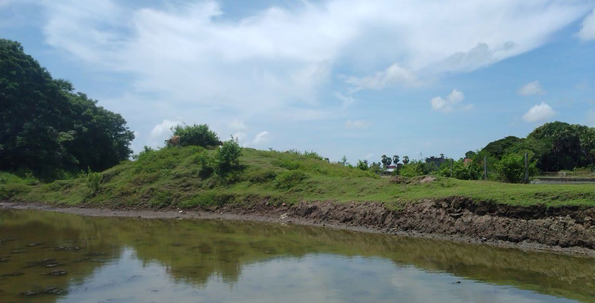
Terletak di sudut selatan benteng, berdekatan dengan pintu masuk dermaga (Bantilang). Menjadi tempat seorang panglima perang mengucap ikrar setia kepada raja sesaat sebelum menuju medan perang, sekaligus tempat penyambutan tamu kerajaan setelah turun dari perahu.
Tradisi, Seni & Budaya
Maudu Adaka' Ri Sanrobone (Maulid)
Peringatan Maulid Nabi Muhammad SAW setiap tahun menjadi agenda penting dan berbeda dari maulid lainnya: seluruh warga turut berpartisipasi — menyiapkan kado' minyak, telur berwarna, buah-buahan, hingga wadah berhias beragam bentuk. Perayaan ini dihadiri pemerintah, para raja seperti Karaeng Galesong dan Karaeng Polongbangkeng, serta pengunjung dari luar Sanrobone.
Pencak Silat (Manca')
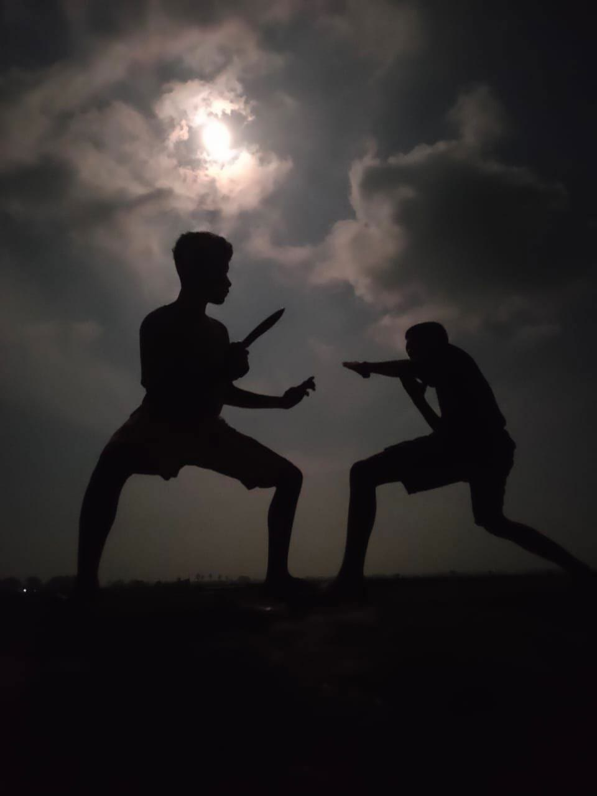
Manca' terdiri dari dua jenis: manca' rahasia yang ditampilkan hanya dalam situasi tertentu, dan manca' kanrejawa yang lebih menghibur berkat gerakan jenaka yang menjadi ciri khasnya. Manca' kanrejawa ditampilkan untuk penjemputan tamu kerajaan dan acara pernikahan.
Tari Pakkurru Sumanga'
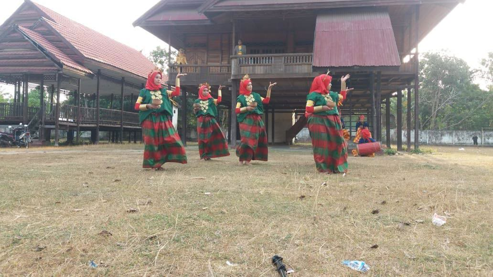
Ditarikan oleh 3–5 gadis berbusana baju bodo khas Makassar, masing-masing membawa wadah dupa berisi beras yang ditebarkan pada gerakan tertentu sebagai simbol penyebar kehidupan. Bermakna “pembangkit semangat”, tari ini ditampilkan pada penyambutan tamu dan kegiatan tradisi, diiringi Gendang Makassar.
Gendang Makassar (Ganrang Mangkasara')
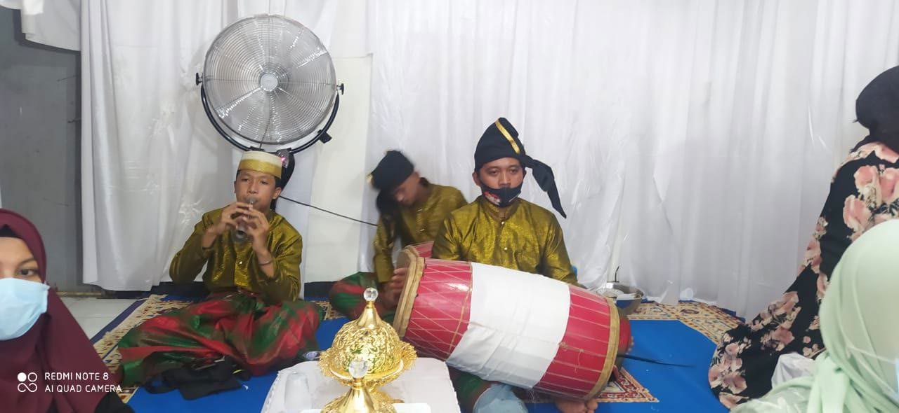
Lebih dari sekadar alat musik, gendang ini adalah simbol dan bagian penting masyarakat adat Sanrobone. Dahulu hanya dipakai di dalam istana dan kalangan bangsawan, kini penggunaannya sudah bersifat umum. Satu set terdiri atas dua gendang, satu Pui'-Pui' (alat tiup khas Makassar), dan satu gong. Jenis tabuhannya antara lain Tunrung Pakanjara', Tunrung Pa'balle, Tunrung Renjang, Tunrung Rua, dan Tunrung Tallu.
Jelajahi Langsung Pesona Sanrobone
Dari situs sejarah kerajaan hingga kuliner khas warisan leluhur — rasakan seluruh pengalamannya secara langsung di Desa Wisata Sanrobone.
RESERVASI KUNJUNGAN